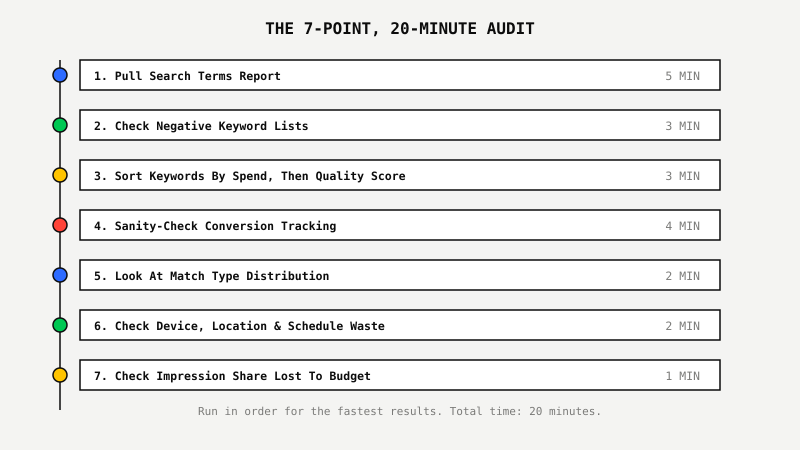
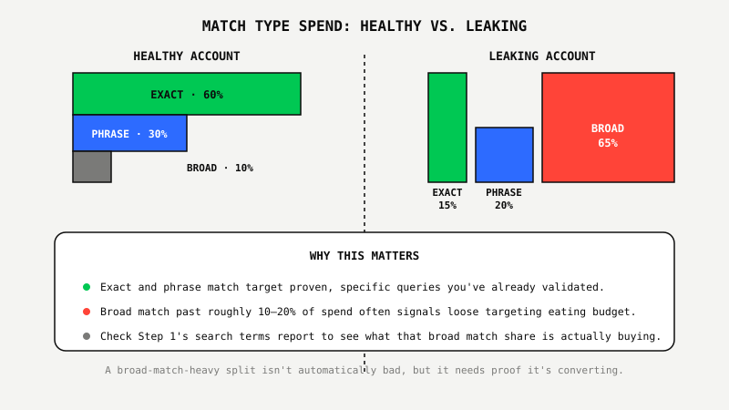

Your Google Ads Account Is Leaking Budget. Find It In 20 Minutes.
 By Akshat Singh··9 min read·Paid Advertising
By Akshat Singh··9 min read·Paid Advertising
Key Takeaways
- A focused Google Ads audit covers seven areas: search terms, negative keywords, Quality Score, conversion tracking, match type distribution, device and schedule waste, and impression share lost to budget. All seven fit inside 20 minutes once you know where to look.
- Pull the last 90 days of your Search Terms report first. Filter for queries with real spend and zero conversions, it's usually the fastest single source of wasted budget in the account.
- Many accounts run with fewer than 200 negative keywords when a well-maintained account in a competitive category often needs 1,000 or more. An empty or stale negative keyword list is one of the most common leaks.
- Sort keywords by spend first, Quality Score second. A low score on a high-spend keyword costs real money every day. A low score on a keyword that gets three clicks a month doesn't.
- A self-audit finds the leaks sitting on the surface. It won't tell you if the account structure underneath is working against you, that's a separate, deeper job.
Remember The Smoke Detector You've Never Tested?
Most homes have one. Almost nobody has pressed the test button. It sits on the ceiling, doing nothing, until the one day it either saves you or turns out to be dead. Nobody checks it because checking takes thirty seconds and nothing ever seems to go wrong.
Most Google Ads accounts run the same way. They sit there, spending money every day, and nobody presses the test button. Not because it's hard. Because it takes twenty minutes and most people assume if the account were broken, they'd already know.
They wouldn't. Industry audits routinely find accounts leaking a meaningful share of budget on waste that never shows up as an obvious red flag, ROAS looks fine, traffic looks fine, and the leak just sits underneath both numbers.
The checklist below covers the seven checks that catch most of it. No downloads, no third-party tools, just your own Google Ads account and twenty minutes.
The 7-Point, 20-Minute Audit
Run these in order. Each one targets a specific kind of leak, and together they cover the areas that catch the most wasted spend in the least time.

Step 1: Pull Your Search Terms Report (5 Minutes)
Export the last 90 days of your Search Terms report and sort by cost. Flag every query with meaningful spend and zero conversions.
This is the single fastest way to find wasted budget in any account. Every irrelevant query on that list is either missing a negative keyword or matched too broadly. Add it to a negative list before you do anything else on this checklist, it's the fastest win available and it takes effect immediately.
Step 2: Check Your Negative Keyword Lists (3 Minutes)
Open your negative keyword lists at both the campaign and account level. If the account only has a handful of negatives, or the list hasn't been touched in months, that's the leak.
Negative keywords are the most commonly neglected part of a Google Ads account. Many run with well under 200 negatives when a well-maintained account in a competitive category often needs 1,000 or more. While you're in there, check whether your own branded terms are showing up inside non-brand campaigns, that inflates those campaigns' reported performance and hides the real cost of non-brand traffic.
Step 3: Sort Keywords By Spend, Then By Quality Score (3 Minutes)
Export keyword-level Quality Score and sort by spend first, not alphabetically. Focus on any keyword burning real budget with a score under 5.
Quality Score is built from three components: expected click-through rate, ad relevance, and landing page experience. A low score on a keyword that's already spending heavily means you're paying more per click than you should on the exact terms that matter most. Don't chase Quality Score on low-volume long-tail keywords where it barely moves total spend either way.
Step 4: Sanity-Check Your Conversion Tracking (4 Minutes)
Compare the conversions Google Ads reported last month against what actually happened in your CRM or order system. If the numbers are wildly off, everything downstream is built on bad data.
Automated bidding trusts the conversion data it's given. If tracking double-counts, fires on the wrong page, or misses events entirely, Smart Bidding optimizes toward the wrong signal, confidently and consistently, because the dashboard says everything is fine. This is the check people skip most often, because it doesn't feel like a Google Ads problem. It's the one that quietly breaks every other number on this list.
Step 5: Look At Match Type Distribution (2 Minutes)
Check what share of spend is going to broad match versus phrase and exact. If broad match is consuming most of the budget and converting worse than the rest, you're paying a premium for lower-quality traffic.
Broad match paired with Smart Bidding is Google's default recommendation in 2026, and for accounts with clean conversion data and real volume, it works. For accounts without either, broad match can drain budget fast on queries that were never close to the original keyword. Mature, well-tracked accounts commonly land closer to 60% exact, 30% phrase, 10% broad. If that ratio is inverted in your account, that's worth a closer look.

Step 6: Check Device, Location, and Ad Schedule Waste (2 Minutes)
Break performance out by device, location, and hour of day. Look for one segment converting at a fraction of the account average while still eating a meaningful share of spend.
Common examples: mobile converting well below desktop with no bid adjustment to compensate, a service-area business running ads outside its actual coverage area, or a lead-gen account running full budget overnight when nobody's on staff to respond to what comes in. None of these show up as an obvious red flag in the top-line numbers. They just quietly drag down the blended average.
Step 7: Check Impression Share Lost To Budget (1 Minute)
Look at "Impression Share Lost (Budget)" in the campaign columns. A high number here means the campaign is running out of budget before the day ends, not running out of demand.
That distinction matters for what you do next. A campaign losing impression share to budget on strong-converting terms is a growth opportunity. A campaign losing impression share to budget on terms that already convert poorly is a sign to fix targeting first, not raise the budget.
What A DIY Audit Won't Show You
A self-audit catches the leaks sitting on the surface. It won't tell you if the account's core structure, campaign architecture, bidding strategy, tracking setup, is working against you at a level a twenty-minute checklist can't reach.
You can fix a leaking faucet without knowing if the pipes behind the wall are rusted through. The seven checks above catch real waste, and they're worth the twenty minutes every single time. They don't answer the deeper question: whether the account was built correctly in the first place.
What Smart Businesses Do With What They Find
Businesses that run this checklist and find real leaks have two options: fix what they can themselves, or get a second set of eyes on the parts a checklist can't reach.
We built the Google Ads Proof Program™ around the second option, without asking you to commit before you see the work. Your first month is a flat $600, no percentage of spend, no contract, and it includes a full account audit that goes past what any checklist can cover: tracking verification, competitor intelligence, and a complete campaign restructure. One account we rebuilt this way now runs at $6.43M in conversion value at 1,375% ROAS, with each conversion costing just $51.12, the kind of result a search-terms cleanup alone can't produce, because the leak wasn't on the surface.
Found leaks you can't fix alone? See what a full audit uncovers.
See The Google Ads Proof Program™ ↗